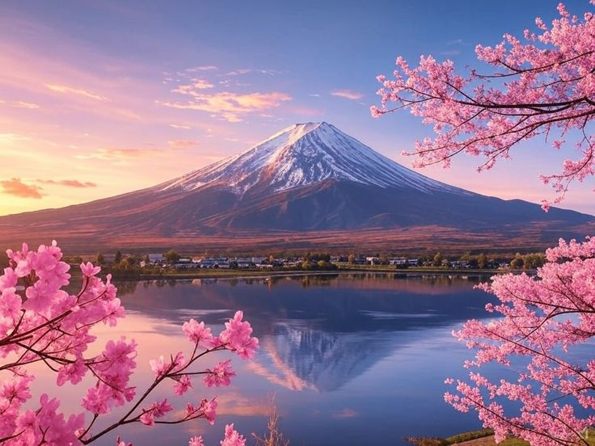
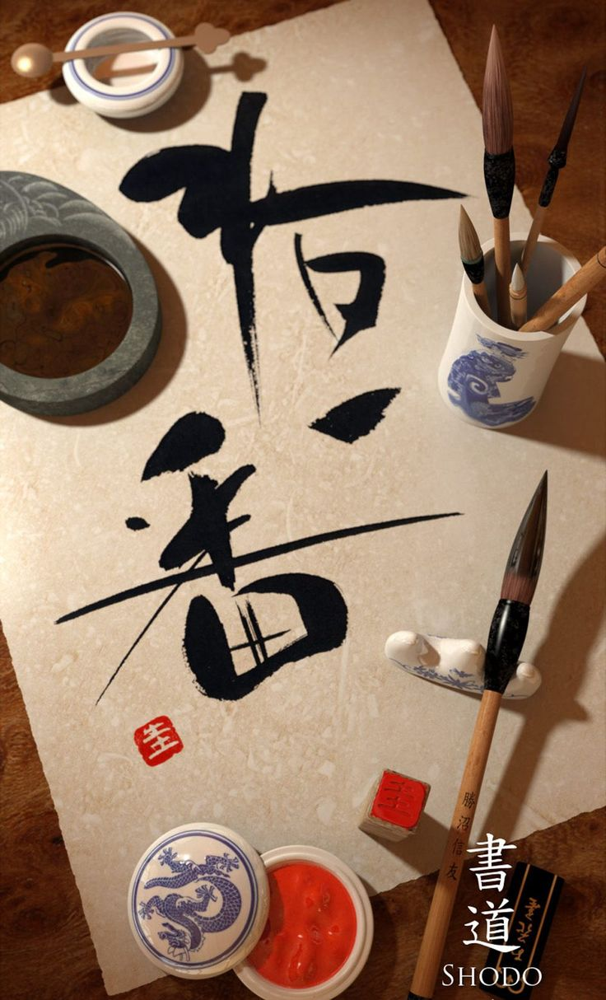

Japonya, Doğu Asya’da Pasifik Okyanusu üzerinde yer alan bir ada ülkesidir. Dört büyük ada—Honshu, Hokkaido, Kyushu ve Shikoku—ve binlerce küçük adadan oluşur. Başkenti Tokyo’dur ve yaklaşık 125 milyonluk nüfusuyla dünyanın en kalabalık ülkelerinden biridir. Resmi dili Japonca olan Japonya’da, hiragana, katakana ve kanji olmak üzere üç farklı alfabe sistemi kullanılır. Ülke, anayasal monarşiyle yönetilir ve İmparator, kültürel bir sembol olarak varlığını sürdürür.
Japonya, zengin kültürüyle geleneksel ve modern yaşamı uyum içinde birleştirir. Antik tapınaklardan yüksek teknolojiye, çay seremonilerinden anime ve mangaya kadar birçok özgün öğeye ev sahipliği yapar. Otomotiv, elektronik, oyun ve robotik gibi alanlarda dünyanın önde gelen ülkelerinden biridir.
Doğal güzellikleriyle de öne çıkan Japonya; aktif yanardağları, sık yaşanan depremleri ve dört mevsimi hissedebileceğiniz iklimiyle dikkat çeker. Fuji Dağı, ülkenin simgesi haline gelmiştir. Kuzeydeki karla kaplı Hokkaido’dan güneydeki tropik Okinawa’ya kadar çeşitli doğa manzaraları sunar.
Japon mutfağı ise dünyaca ünlüdür. Sushi, ramen, tempura ve matcha gibi lezzetler hem yerel halkın hem de ziyaretçilerin favorilerindendir. Temiz şehirleri, güvenli sokakları ve saygılı insanlarıyla Japonya, keşfetmeye değer eşsiz bir kültür ve yaşam tarzı sunar.
Japonya
Japonya’da Yaşam
Japonya, modern yaşamın hızını geleneksel değerlerle dengeleyen benzersiz bir ülkedir. Şehirlerde yaşam oldukça yoğun ve sistemlidir; özellikle Tokyo, Osaka ve Kyoto gibi büyük şehirlerde hayat hızlı akar. Toplu taşıma dakikliğiyle ünlüdür ve insanlar genel olarak disiplinli, saygılı ve toplumsal kurallara önem veren bir yaşam tarzı benimser. Yürürken telefonla konuşmamak, toplu taşıma araçlarında sessiz olmak gibi kurallar, günlük yaşamın bir parçasıdır.
Konutlar genellikle kompakt ve fonksiyoneldir; şehir merkezlerinde küçük daireler yaygındır. Japonya’da yaşam pahalı olabilir, ancak sağlık hizmetleri, güvenlik, temizlik ve teknolojiye erişim gibi konularda oldukça yüksek bir yaşam standardı sunar. Ayrıca Japonya’nın her köşesi, mevsimlerin belirginliğiyle farklı bir güzellik taşır. İlkbaharda sakura çiçekleriyle kaplanan sokaklar, sonbaharda kızıl yapraklarla dolan parklar yaşamın bir parçasıdır.
Japonlar, sosyal hayatta nezakete ve uyuma büyük önem verir. İş ortamında hiyerarşi ve grup uyumu öne çıkarken, arkadaşlık ilişkilerinde karşılıklı anlayış ve mesafe korunur. Ayrıca Japonya'da yaşam süresi oldukça yüksektir; sağlıklı beslenme alışkanlıkları ve aktif yaşam tarzı bunda etkilidir.
Ambalaj Gerçekliği
Japonya’da ürün ambalajları, içeriği birebir yansıtmak zorundadır. Örneğin bir çikolata paketinde görülen görüntü, içindekinin gerçek boyutu ve görünümüyle uyumlu olmalıdır. Tüketiciye “yanıltıcı” görsel sunmak yasa dışıdır.
Geleneksel Kültür
Japon kültürü, zarafet ve sadeliğin öne çıktığı birçok geleneksel ögeye sahiptir. Bu ögelerden biri olan kimono, hem günlük yaşamda hem de özel günlerde giyilen geleneksel bir giysidir. Kumaşın rengine, desenine ve dokusuna göre farklı anlamlar taşır; düğünlerde beyaz ve altın tonları, yaz festivallerinde ise canlı renkli yazlık versiyonu olan yukata tercih edilir.
Bir diğer önemli kültürel gelenek olan çay seremonisi (茶道 / sadō), sadece çay içmekten öte bir felsefeyi temsil eder. Ev sahibi, misafire özenle hazırlanmış matcha (yeşil toz çay) sunarken, her hareket belirli bir düzen ve sakinlikle yapılır. Bu ritüel, sadelik, saygı, uyum ve huzur gibi değerleri ön plana çıkarır.
İkebana (生け花) ise çiçek düzenleme sanatıdır. Batı’daki çiçek aranjmanlarından farklı olarak ikebana’da doğanın ruhunu ve mevsimsel geçişleri yansıtmak esastır. Dalların yönü, boşlukların kullanımı ve renk dengesiyle oluşturulan kompozisyon, adeta bir meditasyon biçimidir.
Bu üç geleneksel sanat, Japonya'nın doğaya, estetiğe ve içsel dengeye verdiği önemin birer yansımasıdır. Modern Japonya'da hâlâ saygı gören bu uygulamalar, geçmişin zarafetini günümüze taşımaya devam etmektedir..
Çöp Kutusu Neredeyse Yok
Japonya’da sokakta çöp kutusu bulmak zor olabilir, çünkü insanlar çöplerini evlerine götürüp ayrıştırarak atarlar. Bu uygulama 1995’teki Tokyo metro saldırısından sonra güvenlik gerekçesiyle yaygınlaşmıştır.
Festivaller
Japonya’da festivaller, hem dini geleneklerin hem de mevsimsel geçişlerin kutlandığı, toplumun bir araya geldiği renkli ve coşkulu etkinliklerdir. Her bölgenin kendine özgü matsuri (festival) geleneği vardır ve yıl boyunca yüzlercesi düzenlenir. Özellikle yaz ayları, festival mevsiminin en yoğun olduğu dönemdir. İnsanlar geleneksel yukata kıyafetlerini giyer, sokaklar renkli fenerlerle süslenir ve havai fişek gösterileri (hanabi taikai) ile gökyüzü aydınlanır.
En bilinen festivallerden biri olan Gion Matsuri, Kyoto’da temmuz ayında düzenlenir ve yüzlerce yıllık geçmişe sahiptir. Devasa tahta geçit arabalarıyla yapılan tören yürüyüşleri, festivalin en dikkat çekici anlarından biridir. Tokyo’daki Sanja Matsuri, Asakusa bölgesinde gerçekleşir ve dini taşıyıcıların (mikoshi) kalabalık sokaklarda taşınmasıyla ünlüdür.
Kış aylarında ise Sapporo Kar Festivali (Yuki Matsuri), devasa buzdan ve kardan heykellerle turistleri kendine çeker. Ayrıca ilkbaharda Hanami, resmi bir festival olmasa da sakura (kiraz çiçeği) izleme geleneğiyle neredeyse ulusal bir kutlamaya dönüşür.
Japon festivalleri, geleneksel müzik, dans, sokak yiyecekleri ve birlikte eğlenmenin ruhunu taşır. Bu festivaller, Japon kültürünün yaşayan birer parçası olarak hem yerel halkı hem de ziyaretçileri büyüler.
Yiyecek Taklit Sanatı (食品サンプル / shokuhin sanpuru)
Japon restoranlarında gerçek gibi görünen plastik yemek modelleri vardır. Bu yiyecek taklitleri vitrinlerde sergilenir ve menüden ne geleceğini görsel olarak gösterir.
Ulaşım
Japonya, dünyanın en gelişmiş ve dakik ulaşım sistemlerinden birine sahiptir. Özellikle büyük şehirlerde metro, tren ve otobüs ağı son derece yaygındır ve günlük yaşamın vazgeçilmez bir parçasıdır. Japon trenleri, dakikliğiyle dünyaca ünlüdür; saniyelik gecikmeler bile anons edilerek yolculardan özür dilenir. Şehir içi ulaşımda kullanılan Suica ve Pasmo gibi elektronik kartlar, hem metroda hem otobüste hem de marketlerde geçerlidir.
Ülkenin simgesi haline gelmiş Shinkansen (hızlı tren), saatte 300 km’ye varan hızıyla şehirler arası ulaşımı hem hızlı hem de konforlu hale getirir. Tokyo’dan Kyoto’ya yaklaşık 2,5 saatte ulaşmak mümkündür. İç hat uçuşları da yaygındır, ancak çoğu insan zaman ve konfor açısından Shinkansen’i tercih eder.
Bisiklet de Japonya’da yaygın bir ulaşım aracıdır. Özellikle küçük şehirlerde ve banliyölerde birçok kişi işe ya da okula bisikletle gider. Ayrıca yaya yolları düzenlidir ve yayalara öncelik verilir. Trafik soldan akar ve sürücüler oldukça dikkatli ve kurallara uygundur.
Genel olarak Japonya’daki ulaşım sistemi, güvenilirliği, temizliği ve erişilebilirliğiyle dikkat çeker. Ziyaretçiler için de oldukça kullanıcı dostudur; birçok durakta İngilizce bilgilendirme bulunur ve yönlendirme sistemleri oldukça net tasarlanmıştır.
Vending Machine (Jihanki) Cenneti
Japonya’da her köşe başında otomatlar bulabilirsin. Ülke genelinde 4 milyondan fazla vending machine vardır. Sıcak çorba, dondurma, pil, şemsiye hatta kravat bile satın alabilirsin.
Eğitim
Japonya'da eğitim sistemi, disiplin, sorumluluk ve toplumsal değerlere dayalı güçlü bir yapıya sahiptir. Zorunlu eğitim 6 yıl ilkokul ve 3 yıl ortaokul olmak üzere toplam 9 yıldır. Öğrenciler genellikle üniformalı ve okula yürüyerek ya da toplu taşıma ile giderler. Küçük yaşlardan itibaren temizlik, zaman yönetimi ve grup bilinci gibi değerler kazandırılır. Örneğin Japon okullarında öğrenciler kendi sınıflarını temizler, bu sayede hem sorumluluk hem de toplumsal saygı gelişir.
Eğitim yılı nisan ayında başlar ve martta sona erer. Öğrenciler, derslerin yanı sıra kulüp aktivitelerine (bukatsu) da katılır; bu kulüpler spordan sanata, bilimden edebiyata kadar çeşitli alanları kapsar. Japonya’da sınavlar büyük önem taşır; lise ve üniversiteye geçiş için yoğun sınav hazırlığı yapılır. Özellikle üniversite giriş sınavları (センター試験 / Center Shiken), öğrenciler için hayatlarının dönüm noktası olarak görülür.
Teknoloji, Japon eğitim sisteminde önemli bir yer tutar. Okullarda akıllı tahtalar, tabletler ve dijital içerikler yaygın olarak kullanılır. Ancak buna rağmen geleneksel öğretmen–öğrenci ilişkisi ve sınıf disiplini korunur. Japonya’daki eğitim, sadece akademik başarıyı değil, aynı zamanda karakter gelişimini de hedefler.
Eğitimdeki bu denge, Japon toplumunun çalışkan, düzenli ve saygılı bireylerden oluşmasını sağlayan temel faktörlerden biridir.
Okul Temizliğini Öğrenciler Yapar
Japon okullarında temizlik görevlisi yoktur. Öğrenciler her gün sınıfları, koridorları ve tuvaletleri sırayla temizler. Bu, hem disiplin hem sorumluluk eğitiminin bir parçasıdır.
Doğa Ve Manzaralar

Japonya, dört mevsimin belirgin yaşandığı, doğal güzelliklerle dolu bir ülkedir. Volkanik dağlar, yemyeşil ormanlar, sakin göller ve kıyı boyunca uzanan çarpıcı manzaralar Japonya’nın coğrafi çeşitliliğini oluşturur. En ikonik doğal sembollerden biri olan Fuji Dağı, sadece dağcılar için değil, sanatçılar ve gezginler için de ilham kaynağıdır. Güneşin doğuşuyla birlikte Fuji’nin etrafını saran sis, doğanın sunduğu en etkileyici sahnelerden biridir.
İlkbaharda sakura (kiraz çiçeği) ağaçları, parkları ve nehir kenarlarını pembeye boyar. Bu dönemde insanlar hanami adı verilen geleneksel çiçek izleme etkinlikleri düzenler. Yazın yeşilin bin bir tonunu barındıran dağ yolları, şelaleler ve bambu ormanları doğa yürüyüşleri için idealdir. Sonbaharda ise momiji adı verilen kızaran akçaağaç yaprakları, Japon bahçelerini ve tapınak yollarını adeta tabloya çevirir.
Japonya'nın doğayla kurduğu ilişki sadece estetik değil, ruhsaldır da. Tapınaklar genellikle doğayla iç içe konumlandırılmıştır; taş bahçeleri, koi balıklı havuzlar ve orman içi yollar içsel huzuru yansıtır. Kırsal bölgeler, modern şehirlerin gürültüsünden uzaklaşmak isteyenler için sakin bir sığınaktır.
Japonya’da doğa, sadece manzara değil; yaşamın, inancın ve kültürün bir parçasıdır.
Otobüs Şoförü Grevi – Ama Hizmet Aksamaz
Japonya’da grev yapan otobüs şoförleri işe gelmeye devam eder ancak yolculardan ücret almaz. Böylece halkı mağdur etmeden, şirketi protesto ederler.
Teknoloji Ve Modern Yaşam
Japonya, dünyanın teknoloji öncüsü ülkelerinden biridir ve modern yaşamın her alanında bu üstün teknolojiyi deneyimlemek mümkündür. Akıllı şehir uygulamalarından, robot teknolojilerine, yapay zekâ destekli hizmetlerden, yüksek hızlı internet altyapısına kadar birçok yenilik günlük hayatın bir parçasıdır. Örneğin Tokyo’daki tren istasyonları, yüz tanıma sistemleriyle güvenliği sağlar ve temassız ödeme sistemleri hayatı kolaylaştırır.
Evlerde ve iş yerlerinde robotlar temizlik, teslimat ve hatta hasta bakımı gibi görevlerde aktif rol alırken, Japonya’nın teknoloji şirketleri yenilikçi elektronik cihazlar ve otomasyon çözümleri geliştirir. Ayrıca Japonlar, çevreci ve enerji verimli teknolojilere büyük önem verir; elektrikli araçlar ve yenilenebilir enerji kaynakları hızla yaygınlaşmaktadır.
Modern yaşam tarzı, yoğun çalışma temposu ve teknolojik gelişmelerle şekillenmiştir. Bununla birlikte Japon toplumu, geleneksel değerler ve modernliği dengede tutmaya büyük özen gösterir. Akıllı şehirlerden, gelişmiş sağlık hizmetlerine, dijital eğitimden kültürel etkinliklere kadar her alanda yenilikçi çözümlerle yaşam kalitesi artırılmaktadır.
Tuvalet Teknolojisi
Japonya’daki tuvaletler teknoloji harikasıdır. Isıtmalı klozet, otomatik temizlik, su sesi efekti ve koku giderici gibi özellikler yaygındır. Bazı tuvaletlerde sizi karşılayan selam sesi bile vardır.
Sanat Ve El Sanatları

Japonya’nın sanatı ve el sanatları, hem estetik hem de felsefi derinlik taşıyan köklü bir geleneğe dayanır. Sadelik, doğayla uyum ve detaylara gösterilen özen, Japon sanatının temel özellikleridir. Geleneksel Japon sanatı; kaligrafi (書道 / shodō), mürekkep resim sanatı (墨絵 / sumi-e), seramik, origami ve ahşap oymacılığı gibi alanlarda yüzyıllardır sürdürülmektedir.
Origami, sadece bir kağıt katlama sanatı değil; sabır, dikkat ve zarafetin ifadesidir. Shodō yani kaligrafi ise, fırçayla yazılan karakterlerin sadece yazı değil birer sanat eseri olarak değerlendirilmesini sağlar. Her fırça darbesi, sanatçının ruh halini ve niyetini yansıtır.
Kintsugi adı verilen sanat ise kırılan seramiklerin altınla onarılmasıdır. Bu teknik, kusurların güzelliğini vurgular ve Japonların “kusursuzlukta değil, kusurda güzellik arama” felsefesini yansıtır.
Japonya'da ahşap baskı sanatı (浮世絵 / ukiyo-e) da oldukça önemlidir. Edo döneminde gelişen bu sanat formu, günlük yaşamdan manzaralara ve ünlü aktörlere kadar pek çok temayı işler. Bugün bile Japon sanatçıların eserleri, geleneksel tekniklerle modern anlatımları birleştiren özel çalışmalar olarak dünyaca tanınmaktadır.
Modern Japon sanatı da geleneksel değerlerden beslenir. Anime, manga, dijital sanat ve moda tasarımı gibi çağdaş sanat türleri, geleneksel estetik anlayışıyla harmanlanır. Sanat ve el işi, Japonya’da sadece üretim değil, bir yaşam biçimidir.
Mevsim Takibi Takıntısı
Japonlar doğadaki mevsim geçişlerine büyük önem verir. Sakuralar açtığında piknik yapılır (hanami), yapraklar kızardığında yürüyüşe çıkılır (momiji-gari), hatta çay paketleri bile mevsimsel olarak değişir.